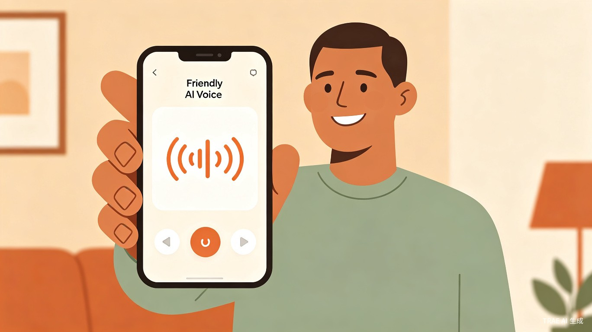
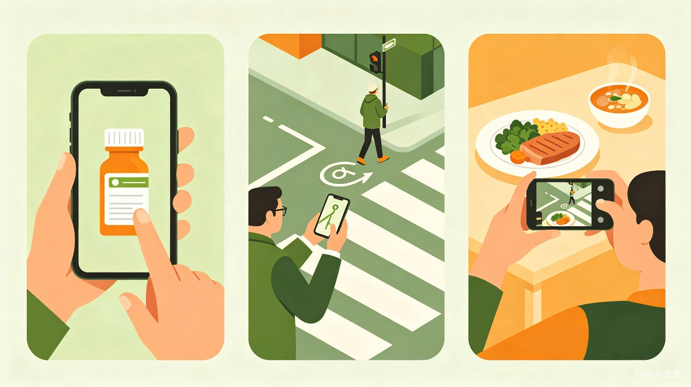
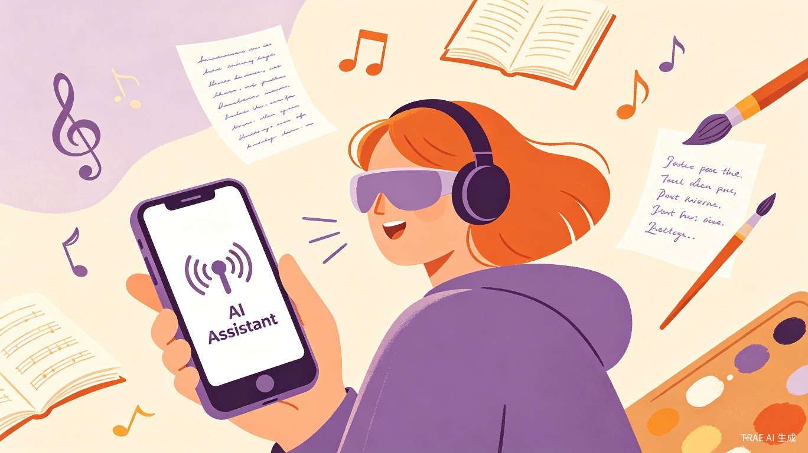
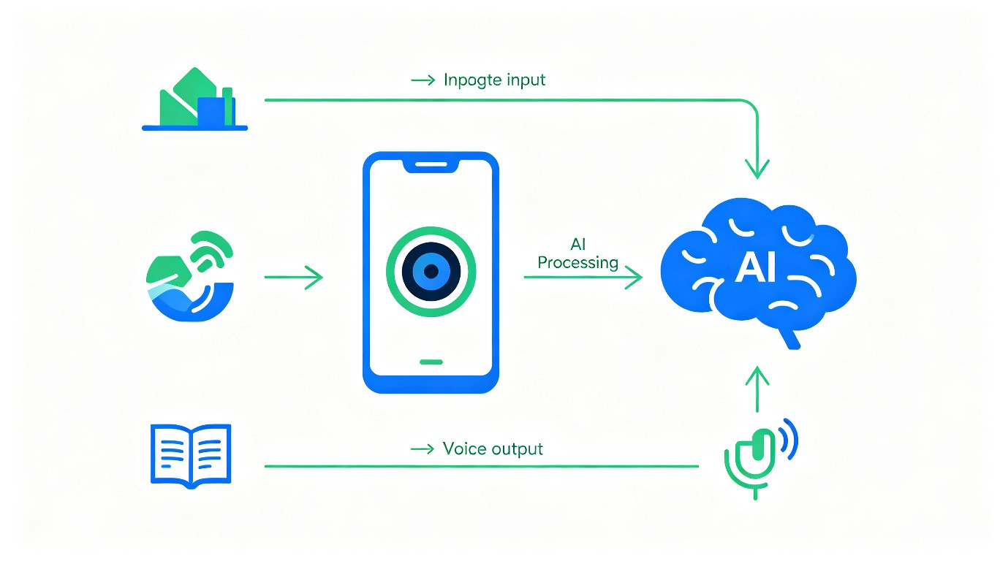

基于AI视觉识别的智能语音伙伴——既能"看见"世界，也能帮你创作表达

视障人士不仅面临"看不见"的生活困境，更面临"难表达"的创作困境——想写作、想编曲、想讲故事，却因视力障碍难以将灵感转化为作品。
看到视障朋友在日常生活中遇到的种种不便，以及AI视觉技术的快速发展，希望通过技术让每个人都能平等地感知世界、自由表达自我。
一款iOS/Android双端App，结合手机摄像头、AI视觉识别、语音合成和AI创作辅导，提供"感知世界+表达自我"的双重服务。
全球约有2.85亿视障人士，中国视障群体超过1700万人。我们的核心用户包括全盲及低视力人群，尤其是需要独立出行、购物、阅读的日常活跃群体，以及渴望表达自我、进行文学/音乐创作的视障创作者。

识别药品标签、食品保质期、说明书文字，辨别家中物品位置
识别交通信号灯、路牌、障碍物，描述周围环境与方向
识别商品名称、价格、成分表，辨别货币面值
无法独立阅读文字信息（药品说明、商品价格、路牌等），严重依赖他人帮助，隐私性差。
传统盲杖只能感知地面障碍物，无法了解周围整体环境（如前方有什么店铺、风景如何）。
市面上的文字识别App只能读字，物体识别App只能认物，缺乏一个整合性的视觉助手。
多数辅助App界面复杂，需要精确点击，对视障用户极不友好。
一键拍摄，AI即时生成场景描述："您面前是一条人行道，左侧有一家便利店，前方10米有红绿灯..."
精准识别并朗读各类文字：药品说明、食品标签、书籍、菜单、路牌等，支持多语言识别。
识别日常物品、食物、颜色、人脸等，帮助用户了解手中物品是什么、是否过期、是谁在面前。
全程语音操作，无需看屏幕。支持语音提问："这是什么？""前面有什么？""这瓶药怎么吃？"
支持手机侧边键快捷启动、语音唤醒，紧急情况下3秒内进入拍摄状态。
图像数据本地处理，不上传云端；支持离线模式，保护用户隐私与数据安全。
盲人相机不仅是"AI眼睛"，更是"AI创作伙伴"。我们深信视障人士拥有丰富的内心世界和创作潜能，AI应该帮助他们跨越视力障碍，将灵感转化为作品。

用户口述想法，AI实时转录并润色成文章、诗歌、小说。支持语音指令修改："把这段改得更抒情一些""加一段环境描写"。
通过哼唱或口述旋律，AI辅助生成简谱、和弦建议。支持语音调整节奏、调式，让视障用户也能创作音乐。
AI引导用户构建故事框架、塑造人物、设计情节。支持语音交互式创作，让每个人都能成为故事家。
AI根据用户拍摄的画面生成文学性描述、诗歌意象、音乐情绪标签，为创作提供丰富的感官素材。
AI将创作的作品以富有感情的语音朗读给用户听，支持一键生成音频文件分享到社交平台。
内置语音交互式写作课、音乐理论课，从零开始教授创作技巧，降低学习门槛。
"我想写一篇关于雨天的散文"→AI引导构思→用户口述片段→AI润色成文→朗读成品
用户哼唱旋律→AI识别并生成简谱→建议和弦进行→调整完善→导出音频
"讲一个关于勇气的故事"→AI提供框架→用户填充情节→AI优化叙事→生成有声故事
盲人相机采用端云协同架构，核心AI模型可部署在本地实现离线识别与创作，复杂场景调用云端大模型获得更精准的理解与生成能力。

帮助视障群体实现更高程度的独立生活，减少对他人的依赖，提升生活尊严。更重要的是，创作辅导功能让视障人士从"被帮助者"转变为"创作者"，释放他们的表达潜能，促进社会对视障群体创造力的认知与尊重。据估算，该产品可帮助视障用户每日节省2-3小时的求助时间。
视障辅助市场规模超百亿元，且随着老龄化加剧持续增长。产品可采用"基础功能免费+高级功能订阅"模式。创作模块可拓展至有声内容创作平台，连接视障创作者与内容消费者，形成独特的UGC生态。
与AR眼镜厂商合作，实现第一视角实时识别，解放双手。
覆盖全球主要语言，让不同国家的视障用户都能受益。
向开发者开放视觉识别API，共建无障碍应用生态。
建立视障创作者交流平台，作品展示、互评互鉴，形成创作生态。
打造视障创作者的有声作品发布平台，连接创作者与听众。
设立视障创作者扶持基金，优秀作品推荐至播客、有声书平台。